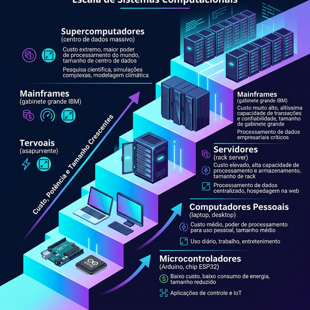
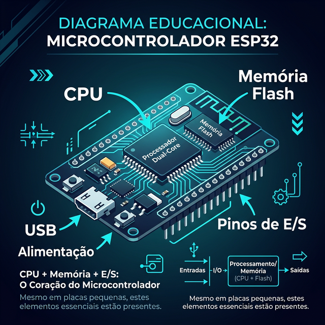
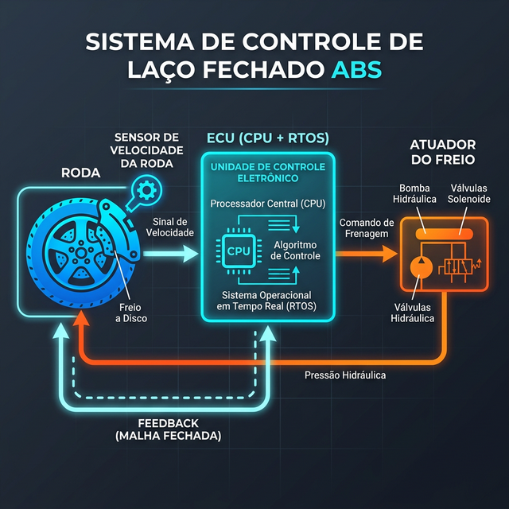
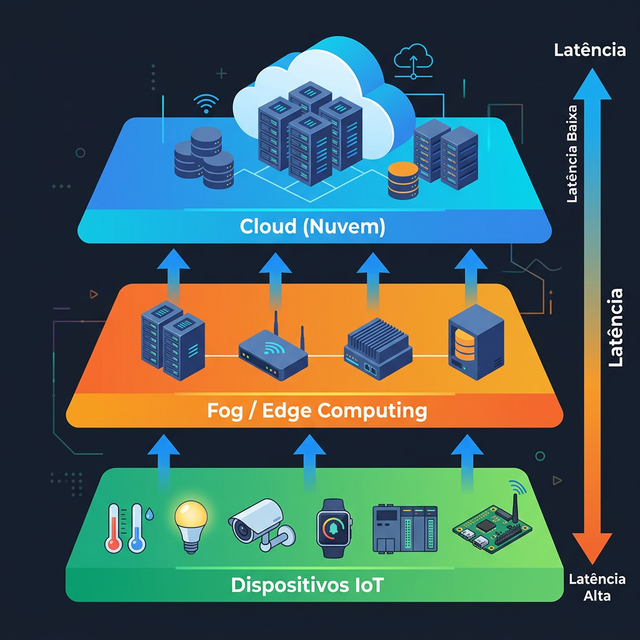

🖥️ Aula 03: Sistemas de Computação
🎯 Objetivo da Aula
Ao final, o aluno deve:
- Classificar os principais tipos de sistemas de computação
- Diferenciar sistemas embarcados, de tempo real e distribuídos
- Identificar exemplos reais de cada categoria no cotidiano
- Relacionar a arquitetura de hardware com o propósito de cada sistema
Base conceitual alinhada com:
- Andrew S. Tanenbaum, Organização Estruturada de Computadores, 6ª ed., Cap. 1 (“O Zoológico dos Computadores”)
- William Stallings, Arquitetura e Organização de Computadores, 11ª ed., Cap. 2 (“Evolução e Desempenho do Computador”)
1️⃣ Recapitulação: De Onde Viemos?
🔗 Conexão com a Aula 02
Na aula anterior, identificamos os três pilares do hardware:
| Componente | Função |
|---|---|
| CPU | Executar cálculos e coordenar o sistema |
| Memória (RAM) | Armazenamento temporário de programas e dados |
| E/S | Interface com o mundo externo |
Mensagem-chave: esses três blocos estão presentes em todo sistema computacional, do menor microcontrolador ao maior data center. O que muda é a escala, o propósito e a organização desses componentes.
2️⃣ Classificação dos Sistemas de Computação
🗂️ O “Zoológico dos Computadores” (Tanenbaum, Cap. 1.3)
Tanenbaum organiza os computadores em categorias com base em porte, custo e finalidade:
| Categoria | Descrição | Exemplo |
|---|---|---|
| Microcontroladores | Chip único com CPU, memória e E/S integrados | Arduino, ESP32 |
| Computadores Pessoais | Uso geral, individual, preço acessível | Notebook, Desktop |
| Servidores | Atendem múltiplos usuários e serviços simultaneamente | Dell PowerEdge, HPE ProLiant |
| Mainframes | Processamento massivo de transações empresariais | IBM zSeries |
| Supercomputadores | Alto desempenho para cálculos científicos extremos | Fugaku, Frontier |
A diferença entre essas categorias não é apenas potência. É uma combinação de requisitos de confiabilidade (um mainframe bancário não pode parar), throughput vs. latência (supercomputadores priorizam throughput, embarcados priorizam latência) e custo por operação (microcontroladores custam centavos, supercomputadores custam milhões).

Escala dos Sistemas de Computação
3️⃣ Sistemas Embarcados
🔧 3.1 Definição
Um sistema embarcado é um computador projetado para executar uma função dedicada dentro de um sistema maior. Possui hardware e software otimizados para uma tarefa específica.
Stallings (Cap. 2): referencia a evolução dos microprocessadores que tornaram os sistemas embarcados viáveis, passando de circuitos dedicados para microcontroladores programáveis com arquitetura Von Neumann miniaturizada.
Tanenbaum (Cap. 1.3): classifica microcontroladores como a faixa mais baixa do “zoológico”, mas enfatiza que são os computadores mais numerosos do planeta: bilhões de unidades em circulação.
🧩 3.2 Características Técnicas
| Característica | Detalhe |
|---|---|
| Função | Dedicada (tarefa única ou conjunto restrito) |
| Hardware | Microcontrolador (CPU + RAM + Flash em chip único) |
| Software | Firmware gravado em memória não volátil (ROM/Flash) |
| Interação | Mínima ou nenhuma interface com o usuário |
| Consumo | Baixo consumo energético |
| Custo | Muito acessível (centavos a poucos reais por unidade) |
🌍 3.3 Exemplos Reais no Cotidiano
- Automotivo: controle do motor (ECU), ABS, airbag
- Eletrodomésticos: micro-ondas, máquina de lavar, ar-condicionado
- Saúde: marca-passo, bomba de insulina, medidor de glicose
- Infraestrutura: semáforos, catracas de metrô, leitores de cartão
- IoT (Internet das Coisas): sensores de temperatura, fechaduras inteligentes, lâmpadas smart

Microcontrolador com legendas: CPU, Memória Flash, Pinos de E/S
💡 3.4 Analogia
O sistema embarcado é como um especialista: faz uma coisa só, mas faz com excelência, usando o mínimo de recursos. Não navega na internet, não abre planilhas, mas controla o motor do seu carro a 6.000 RPM sem falhar.
4️⃣ Sistemas de Tempo Real (Real-Time)
⏱️ 4.1 Definição
Um sistema de tempo real é aquele no qual a correção da resposta depende não apenas do resultado lógico, mas também do tempo em que o resultado é produzido.
Stallings (Cap. 1): aborda sistemas de tempo real no contexto de sistemas operacionais de tempo real (RTOS), onde o escalonamento de tarefas deve respeitar prazos rígidos.
⚖️ 4.2 Classificação: Hard vs. Soft Real-Time
| Tipo | Consequência do Atraso | Exemplo |
|---|---|---|
| Hard Real-Time | Falha catastrófica (perda de vida, destruição de equipamento) | Airbag, sistema de pouso de aeronave, marca-passo |
| Soft Real-Time | Degradação de qualidade (aceitável em certos limites) | Streaming de vídeo, videochamada, jogos online |
A diferença entre Hard e Soft não é velocidade. É a consequência do descumprimento do prazo: Hard significa que prazo perdido = sistema falhou. Soft significa que prazo perdido = qualidade degradada, mas o sistema continua.
🔄 4.3 Componentes de um Sistema de Tempo Real
[ Sensores ] → [ Controlador (CPU + RTOS) ] → [ Atuadores ]
↑ |
└────────── Feedback (malha fechada) ─────────┘
- Sensores: captam dados do ambiente (temperatura, velocidade, pressão)
- Controlador: processa dados dentro do prazo (deadline)
- Atuadores: executam a ação física (abrir válvula, acionar freio)
- RTOS: sistema operacional que garante escalonamento com prazos (ex: FreeRTOS, VxWorks)

Diagrama de malha fechada: Sistema de freio ABS
🏭 4.4 Exemplos Críticos
| Setor | Sistema | Tipo |
|---|---|---|
| Aviação | Fly-by-wire (controle de voo eletrônico) | Hard |
| Automotivo | ABS, controle de estabilidade (ESP) | Hard |
| Medicina | Marca-passo cardíaco | Hard |
| Entretenimento | Reprodução de vídeo em streaming | Soft |
| Telecomunicações | VoIP, videoconferência | Soft |
| Indústria | Controle de temperatura em forno industrial | Hard |
💡 4.5 Analogia
Imagine um goleiro defendendo um pênalti: ele precisa dar a resposta certa (direção correta) no tempo certo (antes da bola chegar). Se acertar a direção mas reagir 1 segundo atrasado, a resposta correta é inútil. Isso é tempo real.
5️⃣ Sistemas Distribuídos
🌐 5.1 Definição
Um sistema distribuído é um conjunto de computadores independentes que se comunicam por rede e se apresentam ao usuário como um sistema único e coerente.
Tanenbaum (Sistemas Distribuídos, Princípios e Paradigmas): define que a transparência é o objetivo central: o usuário não percebe que está interagindo com múltiplas máquinas.
Stallings (Cap. 2): contextualiza os sistemas distribuídos dentro da evolução das arquiteturas, onde o desempenho escala horizontalmente (mais máquinas) ao invés de verticalmente (máquina mais potente).
🏗️ 5.2 Características Fundamentais
| Característica | Descrição |
|---|---|
| Transparência | O usuário não percebe a distribuição |
| Escalabilidade | Adição de nós para aumentar capacidade |
| Tolerância a Falhas | Redundância permite que o sistema sobreviva a falhas parciais |
| Concorrência | Múltiplos processos executam simultaneamente |
| Heterogeneidade | Componentes com SO, hardware e linguagens diferentes podem cooperar |
🔄 5.3 Diagrama Conceitual
┌──────────┐ ┌──────────┐ ┌──────────┐
│ Máquina A│ │ Máquina B│ │ Máquina C│
│ (Nó 1) │ │ (Nó 2) │ │ (Nó 3) │
└────┬─────┘ └────┬─────┘ └────┬─────┘
│ │ │
═════╪═══════════════╪══════════════╪═════
│ REDE (Barramento │
│ ou Internet) │
═════╪═══════════════════════════════╪═════
│
┌──────┴──────┐
│ Usuário │
│ (vê sistema │
│ único) │
└─────────────┘
🌍 5.4 Exemplos Reais
| Sistema | Como funciona | O que o usuário vê |
|---|---|---|
| Google Search | Milhares de servidores processam sua busca em paralelo | Uma caixa de pesquisa simples |
| Netflix | CDNs distribuídas globalmente entregam conteúdo do servidor mais próximo | Um botão de play |
| Bitcoin/Blockchain | Milhares de nós mantêm cópia do ledger sem autoridade central | Uma carteira digital |
| Servidores distribuídos roteiam mensagens entre usuários | Um app de mensagens | |
| Computação em Nuvem (AWS, Azure) | Data centers espalhados pelo mundo oferecem poder computacional sob demanda | Um console web |
Data Centers Distribuídos pelo Mundo
💡 5.5 Analogia
Um sistema distribuído é como uma rede de restaurantes franqueados: cada unidade opera de forma independente, com seus próprios funcionários e cozinha, mas o cliente percebe uma experiência unificada (cardápio, identidade visual, padrão de atendimento). Se uma unidade fecha, as outras continuam funcionando.
6️⃣ Comparação Estrutural dos Três Sistemas
| Critério | Embarcado | Tempo Real | Distribuído |
|---|---|---|---|
| Foco principal | Função dedicada | Resposta dentro do prazo | Cooperação entre máquinas |
| Hardware típico | Microcontrolador | CPU + RTOS | Múltiplos servidores em rede |
| Memória | Kilobytes a Megabytes | Variável (depende da aplicação) | Gigabytes a Terabytes (agregado) |
| Interação com usuário | Mínima ou nenhuma | Geralmente nenhuma (sensores) | Transparente ao usuário |
| Tolerância a falhas | Baixa (reinicia ou falha) | Crítica em Hard RT | Alta (redundância de nós) |
| Exemplo síntese | Controle de micro-ondas | ABS de um carro | Google Search |
| Sobreposição | Pode ser tempo real | Pode ser embarcado | Pode conter embarcados e RT |
Essas categorias não são mutuamente exclusivas. Um sistema pode ser embarcado E de tempo real (ex: ECU do motor). Um sistema distribuído pode conter nós que são embarcados e de tempo real (ex: frota de drones autônomos coordenados).
7️⃣ Tendências Contemporâneas
🚀 7.1 Convergências Atuais
| Tendência | Descrição | Relação com a Aula |
|---|---|---|
| IoT (Internet das Coisas) | Bilhões de dispositivos embarcados conectados à rede | Embarcados + Distribuídos |
| Edge Computing | Processamento na borda da rede, próximo ao dispositivo | Embarcados + Tempo Real |
| Fog Computing | Camada intermediária entre dispositivos IoT e nuvem | Distribuídos + Tempo Real |
| AIoT | Inteligência Artificial executada em dispositivos embarcados | Embarcados + IA |
| RISC-V | Arquitetura aberta de conjunto de instruções para embarcados | Embarcados + Hardware Aberto |

Arquitetura em Camadas: IoT, Fog/Edge e Cloud
8️⃣ Resumo Estrutural da Aula
| Conceito | Definição em uma frase |
|---|---|
| Sistema Embarcado | Computador dedicado a uma função específica, integrado a um dispositivo maior |
| Sistema de Tempo Real | Sistema cuja correção depende do resultado E do tempo de resposta |
| Hard Real-Time | Atraso = falha catastrófica |
| Soft Real-Time | Atraso = degradação aceitável |
| Sistema Distribuído | Conjunto de máquinas independentes que parecem uma só para o usuário |
| IoT | Dispositivos embarcados conectados em rede formando um sistema distribuído |
9️⃣ Metodologia Ativa: Atividade Prática
🎓 Atividade: “Classifique o Sistema”
Formato: Aprendizagem Baseada em Problemas (PBL)
Instrução para os alunos:
Para cada cenário abaixo, identifique:
- O tipo de sistema (Embarcado, Tempo Real, Distribuído, ou combinação)
- Se tempo real, classifique como Hard ou Soft
- Justifique com base nos conceitos da aula
| # | Cenário | Resposta Esperada |
|---|---|---|
| 1 | Sistema de freio ABS de um carro | Embarcado + Hard Real-Time |
| 2 | Serviço de busca do Google | Distribuído |
| 3 | Termostato inteligente (Nest) | Embarcado + Soft Real-Time + Distribuído (conectado à nuvem) |
| 4 | Sistema de controle de voo de um avião | Embarcado + Hard Real-Time |
| 5 | Spotify transmitindo música | Distribuído + Soft Real-Time |
| 6 | Semáforo de trânsito com temporizador | Embarcado |
| 7 | Frota de drones de entrega coordenados | Embarcado + Hard Real-Time + Distribuído |
🧪 Desafio Extra (Sala de Aula Invertida)
Para casa: Pesquisar e trazer para a próxima aula um exemplo real do cotidiano que combine os três tipos (embarcado + tempo real + distribuído). O aluno deve:
- Descrever o sistema
- Identificar os componentes de hardware (CPU, Memória, E/S)
- Justificar a classificação
- Citar se o sistema é Hard ou Soft Real-Time
🔟 Referências Bibliográficas
📖 Referências Obrigatórias
- STALLINGS, W. Arquitetura e Organização de Computadores: projetando com foco em desempenho. 11ª ed. São Paulo: Pearson, 2024.
- Capítulo 2: Evolução e Desempenho do Computador, seção sobre evolução dos microprocessadores e tipos de sistemas.
- Capítulo 1: Introdução, seção sobre Estrutura e Função.
- TANENBAUM, A. S. Organização Estruturada de Computadores. 6ª ed. São Paulo: Pearson, 2013.
- Capítulo 1, Seção 1.3: “O Zoológico dos Computadores”, com classificação: microcontroladores, PCs, servidores, mainframes.
- CORRÊA, A. G. D. Organização e Arquitetura de Computadores. São Paulo: Pearson, 2016.
📄 Referências Complementares e Artigos
- TANENBAUM, A. S.; VAN STEEN, M. Sistemas Distribuídos: Princípios e Paradigmas. 2ª ed. São Paulo: Pearson, 2007.
- Definição formal de sistema distribuído e propriedades de transparência.
- MARWEDEL, P. Embedded System Design: Embedded Systems Foundations of Cyber-Physical Systems and the Internet of Things. 4th ed. Springer, 2021.
- Referência avançada sobre projeto de sistemas embarcados e sua relação com IoT.
- KOPETZ, H. Real-Time Systems: Design Principles for Distributed Embedded Applications. 2nd ed. Springer, 2011.
- Referência clássica sobre sistemas de tempo real, incluindo a distinção Hard/Soft e o conceito de malha fechada.
- BONOMI, F. et al. “Fog Computing and Its Role in the Internet of Things.” Proceedings of the First Edition of the MCC Workshop on Mobile Cloud Computing (MCC ‘12), ACM, 2012, pp. 13-16.
- Artigo seminal que introduziu o conceito de Fog Computing.
- SHI, W.; DUSTDAR, S. “The Promise of Edge Computing.” IEEE Computer, vol. 49, no. 5, 2016, pp. 78-81.
- Artigo introdutório sobre Edge Computing e suas aplicações em IoT.
🔗 Links Úteis para Aprofundamento
| Recurso | Descrição | Link |
|---|---|---|
| FreeRTOS | RTOS open-source para embarcados | freertos.org |
| Arduino | Plataforma de prototipagem embarcada | arduino.cc |
| AWS IoT | Plataforma de IoT na nuvem | aws.amazon.com/iot |
| RISC-V Foundation | Arquitetura aberta de instruções | riscv.org |